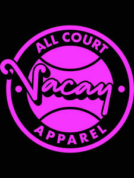
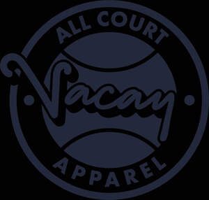

Trade Mark Journal No.2025/024 13 June 2025
UK00004211026 29 May 2025 (25,28,35,41)
Mark 1

Mark 2

- Class 25
- Clothing; Knitwear [clothing]; Jackets [clothing]; Headbands [clothing]; Gloves [clothing]; Clothes; Jerseys [clothing]; Shorts [clothing]; Parts of clothing, footwear and headgear; Windproof clothing; Embroidered clothing; Wristbands [clothing]; Rainproof clothing; Waterproof clothing; Casual clothing; Clothing for leisure wear; Leisure clothing; Clothing for sports; Sports clothing; Clothing for children; Tops [clothing]; Weatherproof clothing; Water-resistant clothing; Beach clothing; Men's clothing; Sportswear; Athletic clothing; Jackets being sports clothing; Sports garments; Footwear for sports; Sports footwear; Footwear; Athletic footwear; Outerwear; Athletics footwear; Clothes for sports; Shoes for leisurewear; Leisure footwear; Casual footwear; Headwear; Caps [headwear]; Children's headwear; Headgear; Headgear for wear; Beanie hats; Sports headgear [other than helmets]; Fashion hats; Hats; Sports caps and hats; Beanies; Baseball caps and hats; Sun hats; Headbands; Footwear for sport; Footwear for use in sport; Tennis shoes; Tennis sweatbands; Tennis shorts; Tennis socks; Tennis shirts; Tennis skirts; Tennis dresses; Tennis pullovers; Tennis wear; Sports clothing [other than golf gloves]; Sports shoes; Athletics shoes.
- Class 28
- Tennis racquets; Tennis rackets; Rackets [for tennis]; Lawn tennis racquets; Tennis balls; Lawn tennis rackets; Guts for rackets [for tennis or badminton]; Racket cases [for tennis or badminton]; Tennis racquet strings; Tennis nets; Table tennis balls; Strings for tennis racquets; Tennis uprights; Badminton racquets; Table tennis paddles; Tennis ball retrievers; Gut for tennis rackets; Platform tennis balls; Tennis racket strings; Table tennis bats; Strings for tennis rackets; Tennis racket covers; Balls for playing platform tennis; Table tennis nets; Tennis racket presses; Badminton rackets; Tennis uprights [sports equipment]; Tennis ball serving machines; Soft tennis balls; Paddles for playing platform tennis; Cases for tennis balls; Platform tennis paddles; Table tennis ball serving machines; Shuttlecocks for badminton; Badminton shuttlecocks; Table tennis paddle cases; Grip bands for tennis rackets; Tennis ball throwing machines; Platform tennis nets; Tennis nets and uprights; Shaped covers for tennis rackets; Tennis ball throwing apparatus; Table tennis racket covers (Shaped -); Coverings for table tennis bats; Tables for table tennis; Table tennis (Tables for -); Table tennis tables; Racketball rackets; Table tennis serving machines; Table tennis serve machines; Natural gut strings for tennis racquets; Grip bands for table tennis bats; Tennis balls [not soft]; Badminton equipment; Tapes with weights for balancing tennis racquets; Balls for racket sports; Strings for badminton rackets; Vibration dampeners for tennis rackets; Table-tennis balls; Racketball balls; Balls for playing racketball; Natural gut strings for tennis rackets; Tennis bags shaped to contain a racket; Balls for playing bocce; Balls for playing sports; Racketball racket strings; Tennis net centre straps; Sports balls; Balls for sports; Shaped covers for table tennis bats; Sport balls; Covers (Shaped -) for badminton rackets; Racquets; Racquet ball nets; Racquet ball gloves.
- Class 35
- Online retail store services relating to clothing; Online retail store services in relation to clothing; Retail services connected with the sale of clothing and clothing accessories; Retail services in relation to clothing accessories; Retail services in relation to fashion accessories; Retail services in relation to clothing; Online retail services relating to clothing; Online retail services relating to luggage; Retail store services in the field of clothing; Online ordering services; Mail order retail services for clothing.
- Class 41
- Tennis instruction; Organisation of tennis tournaments; Entertainment in the nature of tennis tournaments; Providing tennis courts; Providing of tennis court facilities; Rental of tennis equipment; Rental of tennis racquets; Rental of tennis courts; Providing tennis court facilities.
Vacay All Court Apparel Limited